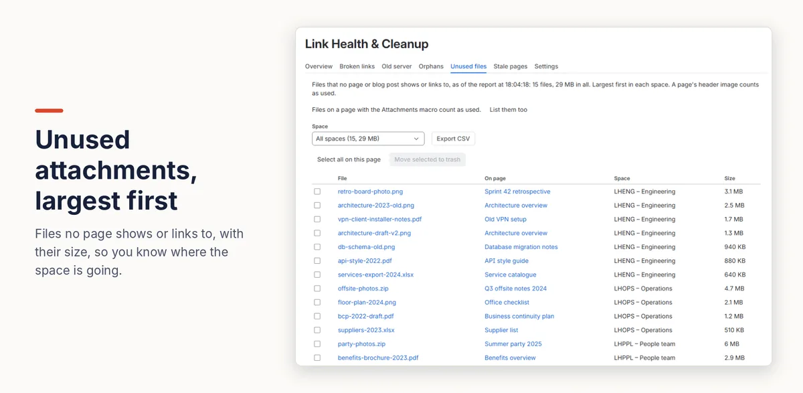

How to find unused attachments in Confluence (and free up storage)
Confluence Cloud can tell you how much storage your site and each space use, and list a space's files by size, but not which files are actually used on a page. To list every unused attachment, largest first, and move them to the trash, use an app that keeps an index of your links and files.
With Confluence on its own
See how much storage you use
- The whole site: in admin.atlassian.com, open your site and choose Storage under Site settings. It shows storage per app and updates every few hours.
- Each space: on Standard, Premium and Enterprise plans, a Confluence admin can go to Settings (the cog) → Space reports (under Data management), press Create report and download a CSV with a Storage used (MB) column for every space (Atlassian's guide).
- Each space's files: Space settings → Content → Attachments lists every file in the space with its size and the page it's attached to. Sort by Size to see the largest first; it shows 20 at a time.
- Each page: open the page’s Details panel (the ⓘ icon on the right edge) and, under Connections, select the Attachments count to see its files and their sizes.
Where it falls short
- Nothing says whether a file is used. A file can be attached to a page without being shown or linked anywhere. The request to detect unused attachments, CONFCLOUD-16577, is still “Gathering interest”.
- Attached isn't the same as used. The space's Attachments list names the page a file belongs to, not whether that page shows or links to it. To be sure, you'd compare each file with its page by hand, space by space.
- Archiving doesn't help: Atlassian notes that archived content keeps its files, so it doesn't free storage (Manage your storage usage).
Every unused file with Link Health & Cleanup
- A Confluence admin installs Link Health & Cleanup. It indexes every page's links and files.
- Open Settings (the cog) → Link Health & Cleanup → Unused files. Files no page or blog post shows or links to are listed largest first, with their page, space and size, and the total for each space.
- Tick the ones to remove (up to 50 at a time) and press Move selected to trash. After you confirm, they go to the space's trash, where a space admin can restore them until it's emptied.
A page's header image counts as used. Files on a page with the Attachments macro count as used too, unless you choose to list them. The app never deletes anything permanently.

Disclosure: Kitefold makes Link Health & Cleanup, so we're not neutral. The built-in options above are free and may be all you need.
Related guides
- How to find orphan pages in Confluence
- How to find broken links in Confluence Cloud
- How to see which pages link to a Confluence page
- Confluence clean-up searches with CQL, and what CQL can’t find
Checked against Confluence Cloud in November 2026. Confluence changes often; if something here no longer matches what you see, email support@kitefold.app and we'll update it.